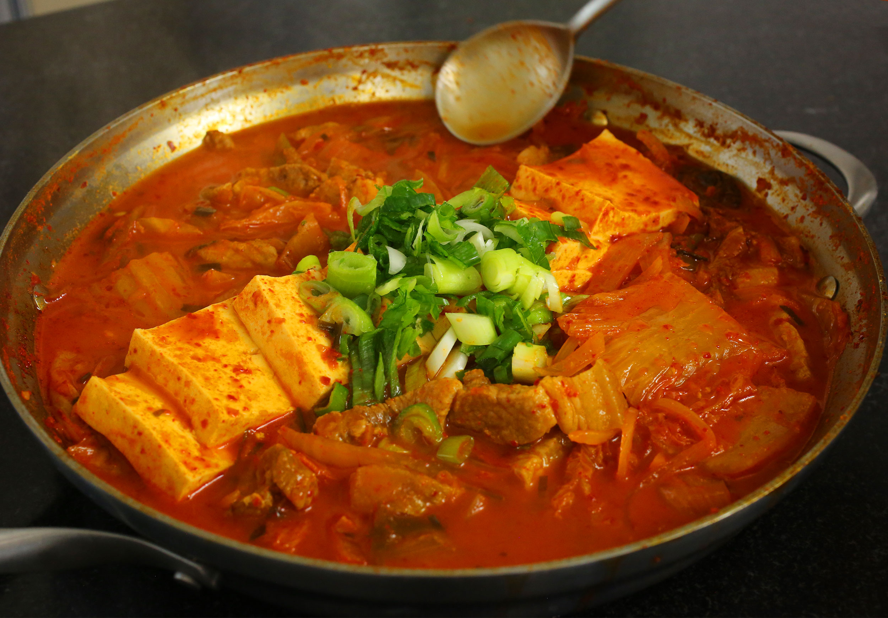

Kimchi Jjigae Recipe

Description
Kimchi jjigae/stew is a loved and important dish in Korean cuisine. It's spicy, savory, warm, and delicious.
Ingredients
- kimchi
- pork
- tofu (optional)
- onions
- jalapenos (optional)
- salt & pepper
- green onions
- rice water
Steps
- Cut the pork into bitesize pieces and season with salt and pepper.
- Cut the onions and jalapenos and mix them with the seasonsed pork. Leave in fridge for 30 minutes.
- Cook the pork and vegetables in a large pot with kimchi.
- Once the pork is cooked, pour in rice water and simmer for a few minutes. Add salt if needed.
- Sprinkle some green onions on top and enjoy with a bowl of rice.